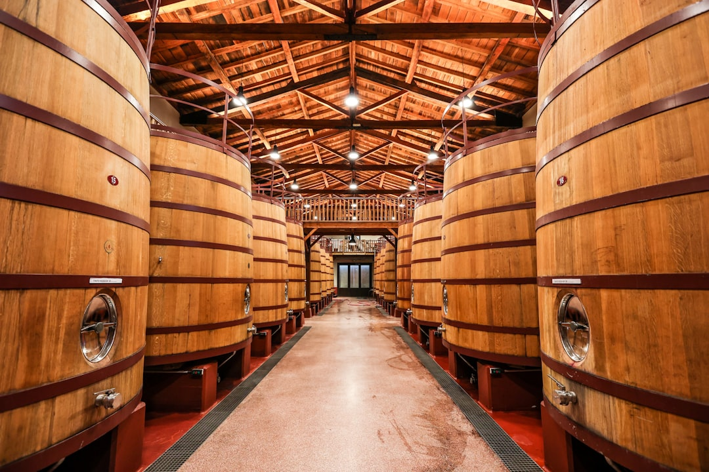

Enoturismo🍷 Haro
Capital indiscutible del enoturismo riojano. El Barrio de la Estación de Haro concentra algunas de las bodegas más históricas y prestigiosas de España: Muga, CVNE, La Rioja Alta y Roda, entre otras. Su casco histórico medieval conserva la arquitectura tradicional riojana con casonas blasonadas y callejuelas de piedra. Cada 29 de junio, la celebración de la Batalla del Vino convierte la peña de San Felices en un espectáculo único. Un destino obligatorio para cualquier amante del vino.
🏛️ Bodegas históricas
🎉 Batalla del Vino
🍽️ Gastronomía
Reservar experiencia en Haro →